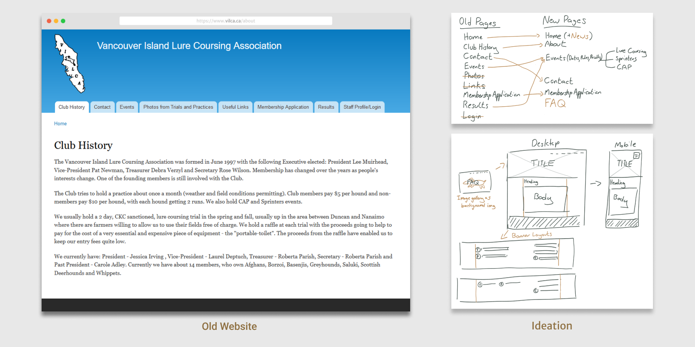

Website Development
Project information
- Category: Freelance Work
- Project date: Fall 2023
- Team: Individual
- Role: UX/UI Designer, Programmer
- Tools: WordPress, Photoshop
- Project URL: VILCA Website
Navigation
About
The Vancouver Island Lure Coursing Association (VILCA) is a non-profit organization committed to promoting the sport of dog racing. Through their website, patrons can stay informed about current and past events across three different categories. As well as seamlessly connect with the association to discuss membership options.
As the website administrator since 2016, I've diligently managed content updates, ensuring the platform remains a valuable resource for the community. Recognizing the need for a contemporary overhaul, I was approached to revamp the website, introducing a fresh visual aesthetic and allow for staff to easily update the website with limited computer expertise.
My Role
In late 2023, I had the task to redesign and implement the website from scratch. Throughout this process, I also engaged in discussions with the clients to understand their desired features and preferences, ensuring a collaborative and customized approach to the project.
Milestones
Discussion of Site Changes
In the process of refining the website, extensive email correspondence enabled a thorough discussion of desired changes. Through this collaborative process, we streamlined ideas, proposing the substitution of the photos page with a dynamic scrolling gallery header, enhancing visual appeal across pages. Additionally, we addressed challenges like outdated links, resulting in the removal of redundant pages.
I noticed the old website had a verbose header with many pages, so I first worked on rephrasing and reducing them.
Information restructuring involved consolidating pages such as merging the Events and Results pages into a unified section. To improve navigation, I strategically relocated challenging-to-find links such as moving the association’s Facebook pages to the footer for user convenience.
Web Page Ideation and Style Guide
When creating layouts for the webpages I focused on modernization, it was integral that the website would have a clean adaptive layout, guaranteeing an optimal viewing experience across various interfaces, including desktops, tablets, and phones. I also wanted to balance aesthetics and longevity, to achieve a timeless appearance that remains current in future years.


{kind=link}
{kind=link}
Due to VILCA having no official colours I proposed to my client a green palette to complement the images supplied, predominantly featuring shades of green and yellow to the headers.
Website Creation
I developed the website using WordPress, adhering to my design specifications. I implemented Contact and Application forms with webforms featuring conditional logic for streamlined communication with staff. To ensure seamless future modifications, I also composed a comprehensive PDF guide with diagrams for the staff.
Challenges
Some challenges arose due to my dual responsibility of both designing and implementing the website. While my strength lies in design, I acknowledged my limitations in the implementation phase. To address this, I made a deliberate choice to adopt a simplified design approach. This decision also would allow for easier staff edits in the future.
Other Projects

Deck-building Game
UI Design, Illustration

Social Media Branding
Visual Design, Brand Design

Artwork
Illustration